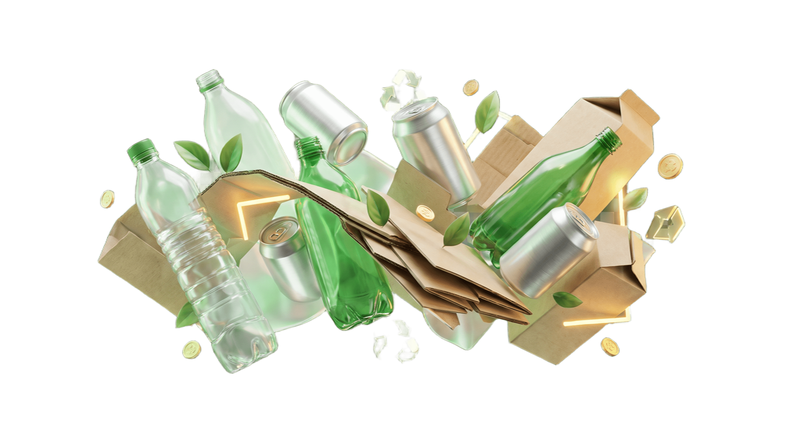

EcoCanje es una propuesta para motivar a los estudiantes a reciclar dentro de la institución. Cada vez que una persona entrega residuos reciclables puede recibir puntos y avanzar de nivel.
Los puntos se pueden cambiar por beneficios sencillos como descuentos en cafetería, productos ecológicos, reconocimientos o participación en rifas.
